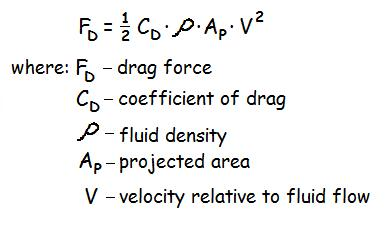

Drag and Cycling Mechanics

In the previous lecture ( fluid mechanics ) we examined surface and form drag. In this lecture we combine these into a single drag coefficient (CD) and look more closely at the other factors that contribute to drag. The drag force is the product of the drag coefficient, the density of the fluid, the projected area and the velocity squared.
Fluid density was covered in the buoyancy portion of the fluid mechanics lecture. Some examples are: fresh water (1000kg/m3), salt water (1024kg/m3), and air 1.2 (kg/m3).

Projected area is the cross sectional area perpendicular to the relative fluid flow.
The coefficient of drag is often determined in a wind tunnel. The object is tethered with a force transducer to measure the drag force while air is blown at known velocities. Since the fluid density is known and the projected area can be easily measured the coefficient of drag is the only unknown and can be calculated using the above formula.
Example: Find the drag force of a cyclist riding at 30 km/hr given: CD = 0.33 and AP = 1.5 m2
Solution: 30km/hr = 30(1000)/3600 = 8.33 m/s and the fluid density of air is 1.2 kg/m3
Therefore, FD = 1/2(0.33)(1.2)(1.5)(8.33)2 = 20.6N
The drag force may seem small (20.6 N) but the power required to ride at that speed is the product of force and velocity (see power lecture). In this case, the cyclist must produce 20.6(8.33) = 172 W of power just to overcome the air resistance. The rolling friction of a bicycle is quite small so most of the energy demands are against drag. If the cyclist was to increase speed to 36 km/hr (10 m/s), the drag force would increase to 29.7 N and the power would increase to 297 W. This is an 80% increase in power required for a 20% increase in speed. Reducing the drag coefficient is very important in competitive cycling and riding behind another cyclist reduces the projected area.
Force-Velocity and Power-Velocity Relations and Cycling Cadence
The force-velocity relation of skeletal muscle was reviewed in the muscle mechanics lecture. Recall that muscle generates less force as the speed of shortening in a concentric contraction increases. Since power is the product of force and velocity, we could also plot the power-velocity relation of skeletal muscle.

In the above graph, we can see the hyperbolic decrease in force with increases in shortening velocity. When velocity is zero (isometric contraction), the force is high but the power is zero due to zero velocity. As the velocity increases, the power increases yet returns to zero at maximum velocity because force is zero. Notice that there is an optimum power at about one third the maximum velocity.
For the cyclist, there is a pedaling frequency (cadence) that allows the muscles to shorten at velocities near the optimum power. For recreational cyclists that cadence is about 80 revolutions per minute while elite cyclists are generally over 90 rpm. Everyone who has ridden a bicycle up and down a steep hill has experienced the large forces that must be applied when the cadence decreases on hill climb and small amount of force that can be applied to the pedal with the high cadence when descending rapidly. This is a good example of the force-velocity relation in practice. By changing gears on the bicycle, the rider can maintain a cadence that allows optimal power delivery throughout the hill climb and descent.